Introduction to Client-server Architecture
Session 1: Servers and Clients
The “Cloud” isn’t Magic
Figure: A whimsical illustration of a cloud being unzipped to reveal racks of computer servers inside. The style should be modern, clean line art with blue and white tones.
The Cloud is just someone else’s computer.
Server-Side Website Programming
- Web browsers and servers communicate via HyperText Transfer Protocol (HTTP).
- Every action—clicking a link, submitting a form, or searching—triggers an HTTP Request from the browser to the server.
- Same for mobile apps.
The web server “listens” for incoming messages, processes the logic, and returns an HTTP Response.
Capabilities of Server-Side Programming
- Efficient Information Delivery
- Tailored User Experiences
- Controlled Access & Security
- Session & State Management
- Data Analysis
Efficient Information Delivery (1/5)
Instead of creating millions of static HTML files, servers use databases to dynamically construct pages.
- Dynamic Generation: Templates are populated with data (JSON, XML, HTML) on the fly.
- Scalability: Handles vast inventories (Amazon) or billions of posts (Facebook) using a single layout structure.
- Cross-System Sharing: Inventory databases can sync across web stores and physical shops simultaneously.
Tailored User Experiences (2/5)
Servers store and analyze client data to provide convenience and personalization:
- Saved Preferences: Persistent storage for credit cards, shipping addresses, and search history.
- Location Awareness: Services like Google Maps provide routing based on real-time or saved locations.
- Predictive Logic: Autocomplete and search suggestions based on deep analysis of user habits.
Controlled Access & Security (3/5)
Server-side logic acts as a gatekeeper for sensitive or private data:
- Authentication: Restricts data access to authorized users (e.g., Online Banking).
- Permissions: Social media platforms use server code to determine who can see specific posts or feeds.
Session & State Management (4/5)
Servers use sessions to “remember” users as they navigate or return to a site:
- Persistence: Staying logged in across multiple tabs or resuming a game where you left off.
- Business Logic: Tracking article views on news sites to trigger subscription prompts via cookies.
Data Analysis (5/5)
Websites use server-side logic to log and monitor user interactions that occur beyond simple page views:
- Behavioral: What you search for, recommend, and how long you stay on a specific page.
- Transactional: Purchase history, cart additions, and payment methods.
- Contextual: Device type, location (via IP), and referral sources.
Physical vs. Logical
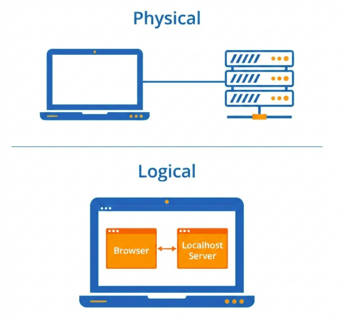Figure: Two diagrams. Top: ‘Physical’ showing a Laptop connected to a Server Rack. Bottom: ‘Logical’ showing two software boxes ‘Browser’ and ‘Localhost Server’ both inside the same Laptop icon.
Logical Tier \(\neq\) Physical Tier.
Examples in the Wild
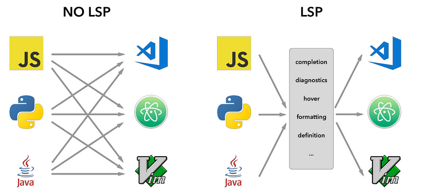LSP vs No LSP. Note that MCP (Model-Context Protocol) is influenced by LSP.
- IDE (LSP): Editor (Client) \(\leftrightarrow\) Language Server.
- Jupyter: Notebook (Client) \(\leftrightarrow\) Kernel (Server).
Session 2: Client-server overview
Overview of HTTP
- Core Definition: An application-layer protocol for fetching resources (HTML, images, video).
- Architecture: A client-server model where the recipient (User-Agent) initiates requests.
- Transport: Primarily runs over TCP or TLS-encrypted connections for reliability.
Key Components: Clients & Servers
- User-Agent: Any tool acting for the user (usually a browser). It is always the entity initiating the request.
- Web Server: A virtual machine or collection of machines (load balancers) that serves the requested document.
- Proxies: Intermediate nodes performing caching, filtering, load balancing, or authentication.
The HTTP Flow
- TCP Connection: Establishing a reliable channel for message exchange.
- The Request: Sending a human-readable (or binary frame) message to the server.
- The Response: Reading the status code and resource returned by the server.
- Conclusion: Closing or reusing the connection for the next request.
URL Anatomy
Figure: Example URL: http://example.com/api/users?id=123&status=active
- Scheme:
http(Protocol). - Host:
example.com(Where). - Path:
/api/users(What). - Query:
?id=123&status=active(Parameters).
Parameters in the Query String
Common Use Cases:
- Filtering:
?category=electronics&sort=price_desc - Searching:
?q=how+to+build+a+website(note:+is URL encoded for space) - Tracking:
?utm_source=newsletter(Commonly used in marketing analytics). - Pagination:
?page=2
Resources vs Representations
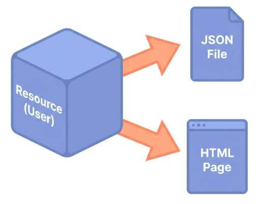Figure: An abstract cube labeled ‘Resource (User)’. Two arrows point from it to ‘JSON File’ and ‘HTML Page’. Text: ‘One Resource, Many Representations’.
- Resource: The concept (e.g., User Profile).
- Representation: The format (
.json,.html). - Content Negotiation: “I speak JSON, please send JSON.”
HTTP Methods
- GET: Retrieve a representation of a resource (Read).
- POST: Create a new resource within a collection (Create).
- PUT: Replace an entire resource or create if missing (Update/Replace).
- PATCH: Apply partial modifications to a resource (Partial Update).
- DELETE: Remove a specific resource (Delete).
HTTP Message: Request
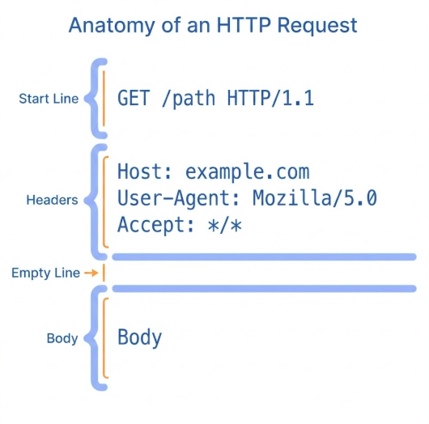Figure: HTTP Request Message Components
- Header: Metadata (Context, Auth, Negotiation).
- Body: Payload (Data, Files) - Empty in GET.
- Separation: Headers tell us how to process the Body.
Some Request Headers

Illustration of a client and server negotiating content format.
- User-Agent: “Hello, I am Firefox”.
- Accept: “I want JSON”.
- Accept-Encoding: “Please
gzipthe response” (Compression).
HTTP Response Status Codes
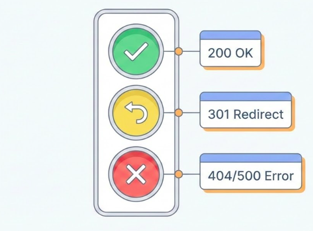Figure: A traffic light arrangement. Green light labeled ‘200 OK’. Yellow light labeled ‘301 Redirect’. Red light labeled ‘404/500 Error’.
- 200 OK: Success.
- 301/302: Redirect (Moved).
- Client error (400 – 499):
- 400 Bad Request: You sent garbage.
- 401 Unauthorized: Who are you?
- 403 Forbidden: Not allowed.
- 404 Not Found: Are you lost?
- 500 Internal Error: Server exploded.
Session 3: DNS, State, Proxies, and Security
The Address Problem
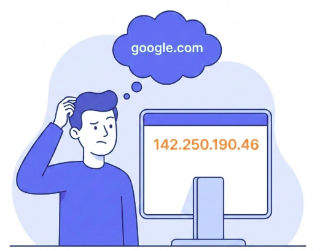Figure: A person looking confused at a long string of numbers ‘142.250.190.46’. A thought bubble shows ‘google.com’.
Humans remember Names. Machines leverage IPs.
DNS: The Address Book
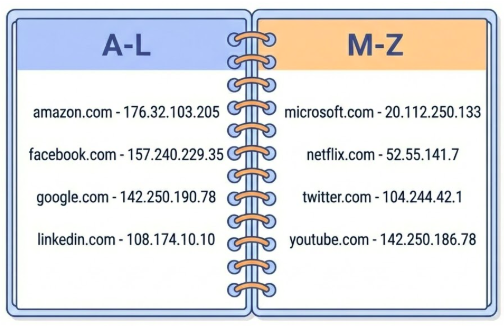Figure: An Address Book Mapping Domain Names to IP Addresses
Domain Name System matches Names to IPs.
Localhost
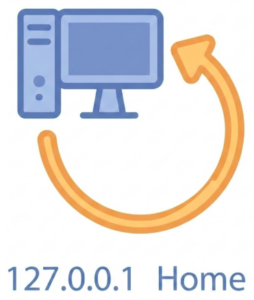Figure: A looping arrow connecting a computer back to itself. Text label: ‘127.0.0.1’ and ‘Home’.
localhost = 127.0.0.1 “There’s no place like home.”
Try It
- Edit
/etc/hosts(Mac/Linux) orSystem32/.../hosts(Win). - Map
127.0.0.1tome.com. - Browser ->
http://me.com-> Your Local Server.
Stateless Conversation
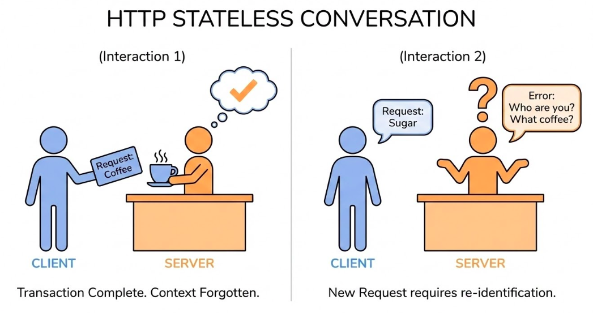Figure: A comic strip style sequence. Panel 1: Client asks for page. Server gives page. Panel 2: Client asks again. Server looks blank and says ‘Who are you?’.
- Definition: Server retains no memory of past requests.
- Implication: Every request must contain all necessary info (Auth, Context).
- Feature, not Bug: Easier to scale (Load Balancing).
Problem: Shopping Cart?
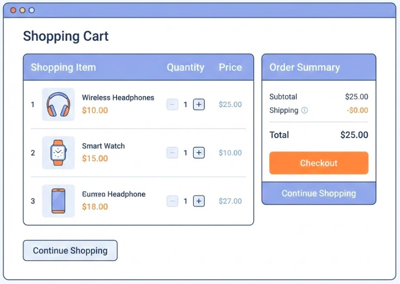Figure: Shopping Cart
How do we build Stateful shopping carts on a Stateless protocol?
Cookies: Managing State
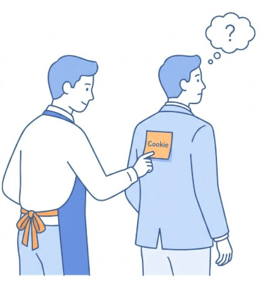Figure: A waiter (Server) sticking a post-it note (Cookie) on a customer’s (Client) jacket. Next time the customer comes in, the waiter reads the note.
- The Problem: How to stay “Logged In” if HTTP is stateless?
- The Solution: Cookies (Client-side fast storage).
- Mechanism: Server sends
Set-Cookie. Browser sends it back automatically.
The “Web Server”
- Virtual Presence: Appears as a single entity to the client, but often represents a complex infrastructure.
- Composition: Can include load balancers, caches, and database servers working in tandem.
- Shared Hosting: Multiple software instances can coexist on one physical machine, often sharing an IP via the
Hostheader.
Proxies: The Middlemen
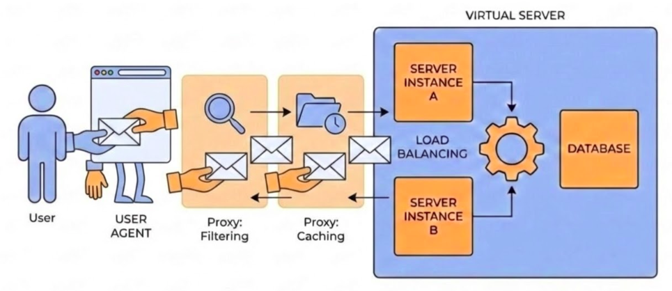User Agent acting on behalf of the User making requests and recieving responses. Proxies in-between the User-Agent and the Server.
Proxies are essential for performance and security.
Functions of a Proxy
- Caching: Stores copies of resources to serve future requests faster.
- Filtering: Performs antivirus scans or implements parental controls.
- Load Balancing: Distributes incoming traffic across multiple backend servers.
- Authentication: Validates user credentials before allowing access to resources.
- Logging: Tracks request history for security and analytics.
Securing Sensitive Information
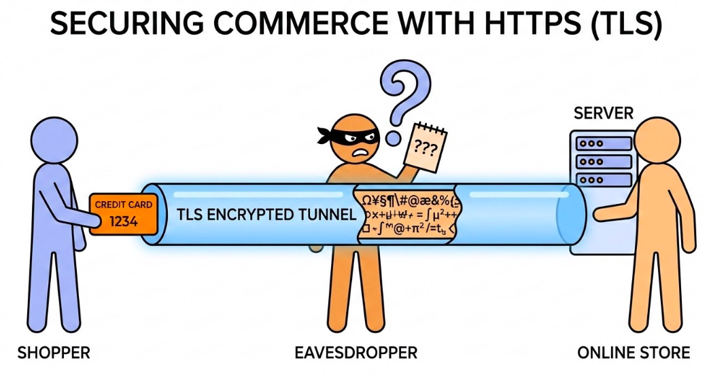Credit Card Information Transmission over TLS Encrypted Channel (HTTPS).
- HTTP: Plain text (Dangerous).
- HTTPS: Encrypted (TLS/SSL).
- What is Encrypted?: Headers, Body.
- What is Visible?: URL, Path, IP Address, Port, Domain.
Session 4: REST APIs
Nouns and Verbs
REST is a set of practices mapping HTTP methods to actions on resources.
- Nouns (Resources): Represent the “what” of the request.
- Verbs (Actions): Represent the “how” or the operation being performed.
Naming Conventions (Nouns)
- Objects: Use
/articlesinstead of/getArticles. - Nested: Use
/authors/42/booksto show relationship.
RESTful Endpoints Meaning
GET /users-> List all.GET /users/1-> Get specific one.POST /users-> Create new.PUT /users/1-> Replace it.PATCH /users/1-> Update it.DELETE /users/1-> remove it.

AI Pros Bootcamp - Week 7